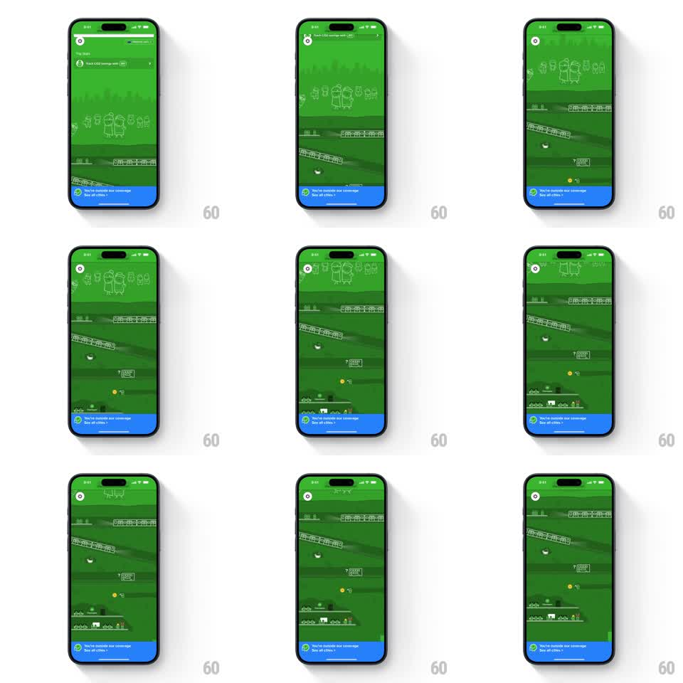

Media
Frame-by-frame

Rebuild this interaction 1:1: Citymapper's hidden-art empty state - a bright green out-of-coverage screen where scrolling up pulls a tall line-art world into view: characters, a train, a bus, a whale, and a rocket, all in white outline on green.

Rebuild this interaction 1:1: Citymapper's hidden-art empty state - a bright green out-of-coverage screen where scrolling up pulls a tall line-art world into view: characters, a train, a bus, a whale, and a rocket, all in white outline on green. ## Integration Integration: stack-agnostic spec - springs given as stiffness/damping, timed motions as duration + curve; map every value to your framework and animation library of choice. ## Scene Solid bright green screen. Top: a CO2-savings pill and back button. Bottom (pinned): a blue banner reading "You're outside our coverage - See all cities". Between them, initially empty green. Scrolling up reveals a continuous vertical line-art illustration: two little characters waving at the top, a tram, a bus, a whale, small houses, and a rocket near the bottom, all drawn in thin white strokes. ## Motion spec Pattern: scroll-driven reveal of a tall hidden illustration. - The artwork is a single tall canvas (~2.5x viewport height) that tracks the scroll 1:1 - scrolling up slides the scene down past the viewport, revealing lower layers. - Subtle parallax: background hills move at ~0.6x scroll speed, foreground figures at 1.0x, giving the flat line art depth. - Small live touches: the characters' arms wave on a loop (small rotation, 1s), the whale spouts a puff every ~3s, the rocket idles with a faint exhaust flicker. - Overscroll at the bottom rubbers back (spring stiffness ~300, damping ~24). - The blue banner never scrolls - it is pinned above the artwork at all times. ## Calibration - The illustration must feel discovered, not presented - nothing visible beyond the banner until the first scroll. - Keep the parallax split subtle; large speed differences make flat line art look layered like paper diorama. ## Reduced motion Artwork scrolls without parallax; ambient loops (wave, spout, exhaust) are disabled. ## Don't miss - Everything is white line on the same green - no fills, no second color until the blue banner. - The scene is bottom-heavy: the biggest surprises (whale, rocket) sit deepest, rewarding a full scroll.